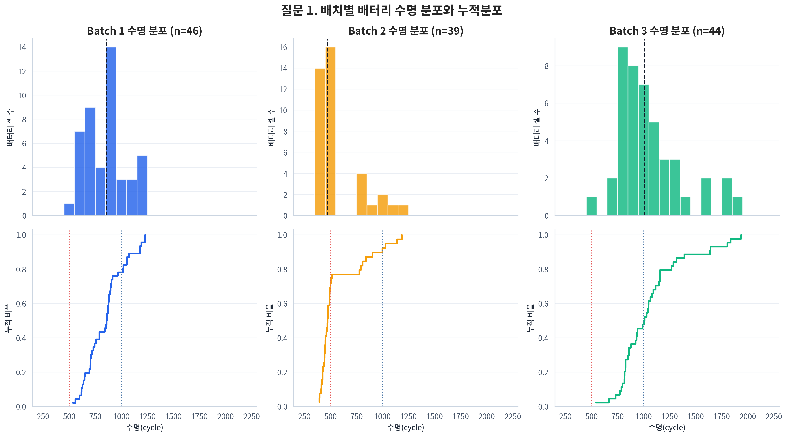
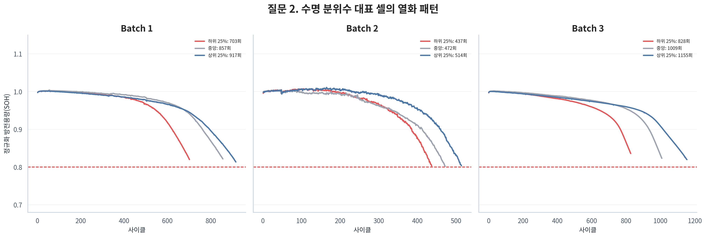
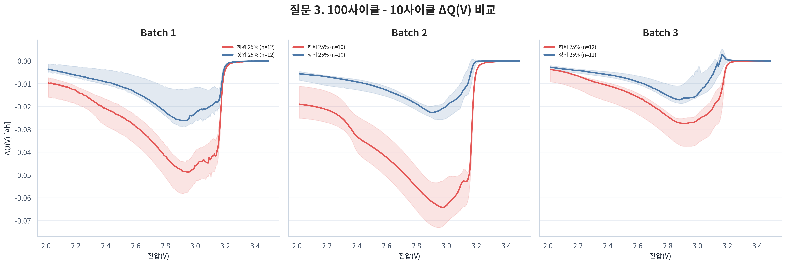
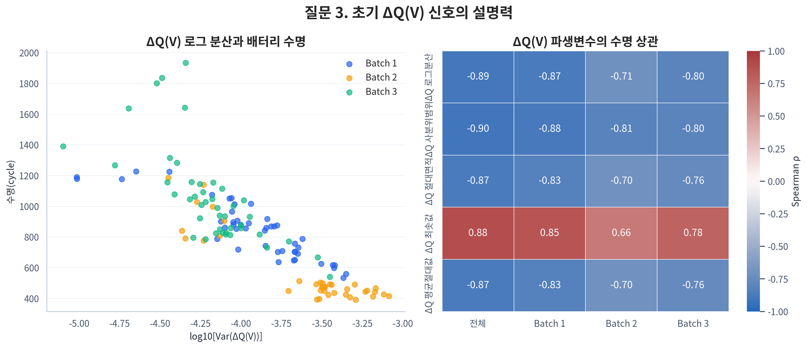
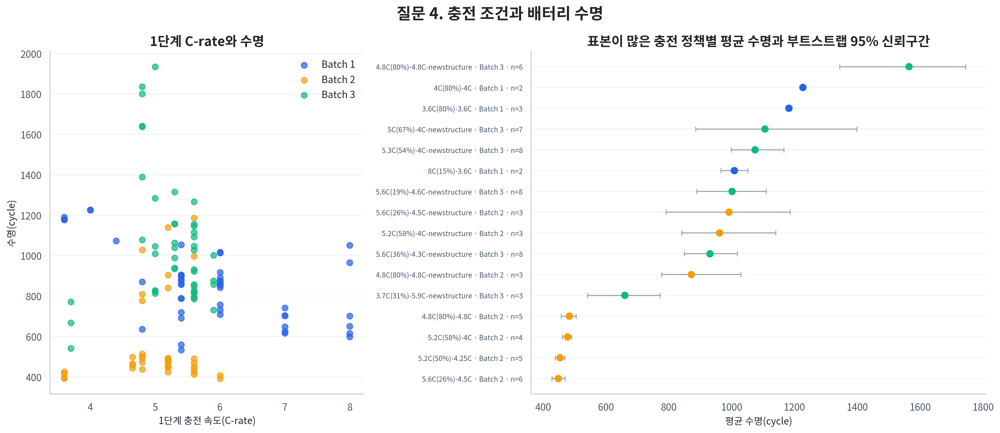
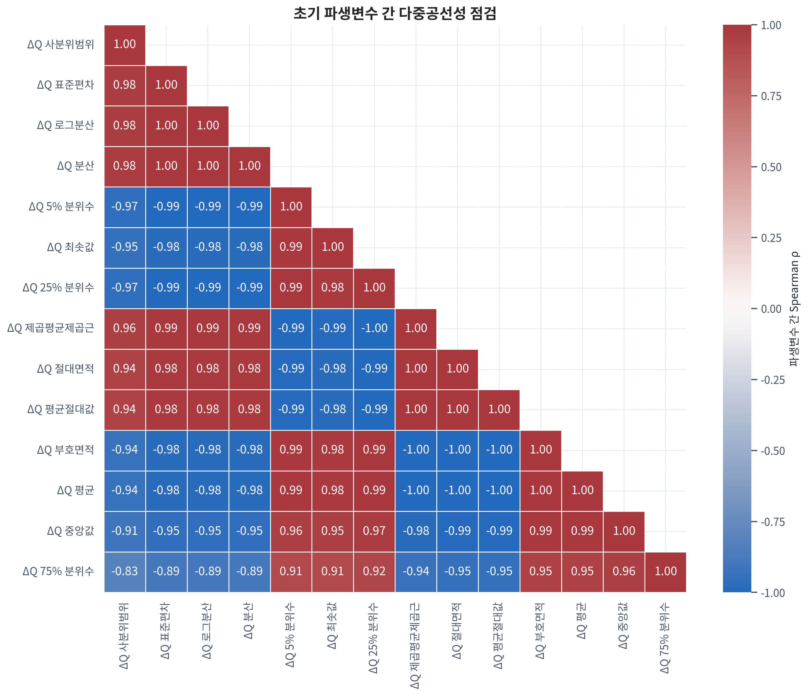

Early-life Predictive Analytics
어떤 초기 신호가 배터리의 미래 수명을 설명하는가?
Report Map
분석은 데이터 구조를 먼저 고정하고, 다섯 개 EDA 질문의 근거를 거쳐, 재현 가능한 Regression 검증 전략으로 수렴한다.
0. Executive Summary
이 프로젝트는 배터리를 끝까지 시험하지 않고 초기 100 cycle만으로 처음부터 수명 종료까지의 총 Cycle Life를 예측한다. 139개 Cell을 점검하고 수명 정답이 있는 129개를 동일한 기준으로 비교했다. Batch별 수명 분포는 크게 달랐고, 초기 Capacity 자체의 관계는 약했지만 ΔQ(V)는 세 Batch에서 일관된 강한 관계를 보였다.
Capacity baseline에서 시작해 ΔQ, Capacity trend, Sensor, Charging Condition을 순서대로 추가한다. 동일한 CV 조건에서 평균 절대 백분율 오차(MAPE)가 실제로 줄어드는지 확인한다.
중복 Feature의 영향을 줄이는 Ridge·ElasticNet을 우선 비교하고, 비선형 관계 확인을 위해 Gradient Boosting 또는 LightGBM을 함께 검증한다.
외부 일반화 위험 확인
가장 단순한 신호 점검
핵심 초기 신호 발견
일관성·중복·누수 판단
1. 문제 정의
배터리의 실제 수명을 확인하려면 수백에서 수천 번 충·방전을 반복해야 한다. 초기 데이터만으로 최종 수명을 예측하면 ESS 점검·교체 시점을 더 일찍 계획하고 장기간 시험의 시간과 비용을 줄일 수 있다.
Cycle은 충전과 방전을 한 번 수행한 단위다. Cycle Life는 처음 사용한 시점부터 SOH 80%에 해당하는 EOL까지 버틴 총 cycle 수다.
cycle_life는 “100 cycle 이후 남은 수명”이 아니라 처음부터 EOL까지의 총 수명이다.
한 번 방전할 때 실제로 꺼낼 수 있는 전하량
전압에 따라 방전 가능한 용량이 변하는 곡선
배터리 내부에서 전류 흐름을 방해하는 정도
예측 범위와 외부 일반화 위험을 확인한다.
가장 직관적인 신호의 한계를 확인한다.
초기 변화 형태의 설명력을 확인한다.
빠른 충전의 단순 규칙을 검증한다.
관계의 크기, Batch 간 일관성, Feature 중복을 함께 판단한다.
2. 데이터 이해
Batch는 서로 다른 시기와 실험 조건에서 수집된 Cell 묶음이다. Day 1은 세 Batch를 동일한 기준으로 비교하되, Day 2 모델 선택은 Batch 1 안에서 수행한다.
| Dataset | 전체 Cell | Target 보유 | Target 결측 |
|---|---|---|---|
| Batch 1 | 46 | 46 | 0 |
| Batch 2 | 47 | 39 | 8 |
| Batch 3 | 46 | 44 | 2 |
| 합계 | 139 | 129 | 10 |
EDA에서는 cycle별 변화를 펼쳐 살펴보지만, Day 2에서는 초기 100 cycle을 요약해 Cell 한 개당 Feature 행 한 개를 만든다. Cycle 기록이 많아도 독립 학습 Sample은 129개 수준이다.
Batch 1의 모든 Cell은 첫 summary cycle에 실측이 아닌 0 채움값이 있어 cycle 2부터 초기 통계를 계산했다.
Batch 2의 8개, Batch 3의 2개 Cell은 cycle_life가 결측이다.
Batch 2의 7개 Cell은 초기 IR이 미가용이고, 3개 Cell은 초기 Tmin이 비정상이다.
첫 cycle placeholder와 일부 물리 범위 밖 QD 측정은 초기 Feature 계산에서 제외했다.
3.1 Question 1
모델이 맞혀야 할 Target의 범위가 Batch마다 같은지, 학습 성능을 외부 데이터에 그대로 기대할 수 있는지 확인했다.
Target이 있는 Cell의 histogram·누적분포·중앙값·수명 구간 비율을 비교하고, 분포 차이를 통계 검정으로 보조 확인했다.

Figure 1. Batch별 Cycle Life 분포와 누적분포
| Batch | Target 수 | 중앙값 | 분포의 특징 |
|---|---|---|---|
| Batch 1 | 46 | 858.5 | 500~1,000 cycle에 주로 분포 |
| Batch 2 | 39 | 472.0 | 500 cycle 미만이 71.8% |
| Batch 3 | 44 | 1,005.5 | 1,000 cycle 초과가 52.3% |
세 중앙값은 472.0~1,005.5 cycle로 크게 달랐다. Kruskal-Wallis H=53.925, p=1.95×10⁻¹²로 분포 차이도 확인됐다.
실험 시기·충전 프로토콜·Cell 구조가 함께 반영됐을 수 있어 특정 요인의 인과효과로 단정할 수 없다.
3.2 Question 2
배터리가 노화하면 QD가 감소하므로 초기 Capacity 수준이나 변화만으로 미래 수명을 구분할 수 있는지 확인했다.
Cycle 2~100의 QD 평균·기울기와 전체 수명 동안의 대표 열화곡선을 비교했다. Knee Point는 용량 감소가 급격히 가속되기 시작하는 시점이다.

Figure 2. 수명 그룹별 대표 방전용량 열화곡선
초기 QD 평균과 수명의 Batch별 관계는 모두 약했다. QD slope도 Batch 1은 0.479, Batch 2는 -0.271로 방향이 달랐다.
전체 곡선에서 계산한 knee cycle과 Cycle Life는 ρ=0.934였지만 미래 구간이 필요하다.
3.3 Question 3 / Core Analysis
Cycle 10과 cycle 100에서 같은 전압을 비교했을 때 방전 가능한 용량이 얼마나 달라졌는지를 나타낸다.
ΔQ(V) = Q100(V) - Q10(V)
초기 Capacity 절대값의 차이가 작았기 때문에 “얼마나 큰가”보다 전압별 방전곡선의 변화 형태가 수명을 설명하는지 확인했다.
실제 cycle 10·100의 Qdlin을 공통 전압축에서 빼고, 각 Batch 수명 상·하위 25%의 중앙곡선과 IQR을 비교했다.

Figure 3. 장수명·단수명 그룹의 ΔQ(V) 곡선
초기 QD 평균은 배치 안에서 수명과의 관계가 약했다.
ΔQ(V)는 눈에 잘 보이지 않는 초기 열화 차이를 전압 구간별 형태로 드러냈다.
3.3 Question 3 / Evidence to Decision

Figure 4. ΔQ(V) 로그분산과 Cycle Life의 관계
| Batch | Spearman ρ | 관계 | 판단 |
|---|---|---|---|
| Batch 1 | -0.871 | 강한 음의 관계 | 학습 Batch에서 핵심 신호 |
| Batch 2 | -0.709 | 같은 방향 | 외부 Batch에서도 유지 |
| Batch 3 | -0.797 | 같은 방향 | 추가 Batch에서도 유지 |
초기 방전곡선 변화가 클수록 최종 수명이 짧아지는 방향이 일관됐다. 전체 데이터의 ΔQ 로그분산 상관은 ρ=-0.892였다.
ΔQ(V)는 초기 QD 평균보다 작은 열화 차이에 민감한 신호로 볼 수 있다. 다만 이는 연관성이며 인과관계는 아니다.
3.4 Question 4
충전 속도는 열화에 영향을 줄 수 있으므로 Charging Policy가 수명 차이를 추가로 설명하는지 확인했다.
정책 문자열을 1단계 C-rate·전환 SOC·2단계 C-rate로 나누고, 산점도와 정책별 평균·표본 수·bootstrap 95% 신뢰구간을 비교했다.
C-rate는 배터리 용량 대비 충전 전류의 크기로, 값이 클수록 더 빠르게 충전한다는 뜻이다.

Figure 5. 충전 조건과 Cycle Life의 관계
| 범위 | 1단계 C-rate ρ | 판단 |
|---|---|---|
| 전체 | -0.027 | 사실상 관계 없음 |
| Batch 1 | -0.483 | 음의 관계 |
| Batch 2 | 0.055 | 방향이 뒤집히며 매우 약함 |
| Batch 3 | -0.229 | 음의 방향이지만 약함 |
Batch 1의 음의 관계는 Batch 2·3에서 같은 크기로 반복되지 않았다. 일부 정책은 n=1~2라 평균 수명의 불확실성도 크다.
Batch, Cell 구조, 온도 등이 함께 섞여 있을 수 있으므로 충전 속도의 인과효과로 단정하지 않는다.
3.5 Question 5
상관이 큰 Feature를 많이 넣는다고 예측이 자동으로 좋아지지는 않는다. Batch마다 방향이 유지되는지와 같은 정보가 반복되는지 확인했다.
Capacity·IR·Temperature·Charge Time·Charging Condition·ΔQ Feature군의 Pearson·Spearman 상관과 Batch별 방향을 함께 비교했다.

Figure 6. 초기 Feature 간 상관관계
전체 상관보다 Batch 1·2·3에서 관계 방향이 유지되는지를 우선한다.
같은 정보를 반복하는 Feature는 대표 변수 선택 또는 규제로 통제한다.
3.5 Question 5 / Feature Groups
| Feature군 | Cycle Life와의 일관성 | 중복·품질 이슈 | Day 2 판단 |
|---|---|---|---|
| ΔQ(V) | 세 Batch에서 강하고 같은 방향 | 파생변수끼리 중복이 매우 큼 | Core / 대표 변수 선택 |
| Capacity | 평균 관계는 약하고 slope 방향이 다름 | 수준·변화량 간 중복 가능 | Baseline·보조 후보 |
| IR | 관계가 약하고 Batch별 방향이 다름 | Batch 2 일부 초기값 미가용 | Incremental 후보 |
| Temperature | 대부분 약하거나 방향이 다름 | Tavg·Tmax 등이 서로 중복 | 대표 변수만 검증 |
| Charge Time | Batch 1·2에서 관계 방향이 반대 | C-rate의 대리 정보 가능 | 추가 가치 확인 |
| Charging | 전체 관계가 약하고 불일치 | 정책별 표본이 작음 | 마지막 단계에서 검증 |
세 Batch에서 가장 강하고 방향이 일관된 Feature군은 ΔQ(V)였다. 다른 Feature군은 일부 Batch에서 관계가 보여도 다른 Batch에서 약해지거나 방향이 바뀌었다.
Batch 간 평균 차이가 큰 상태에서 데이터를 합치면 상관이 커질 수 있다. 따라서 전체 순위보다 Batch별 일관성을 우선한다.
외부 평가 분리
단순 기준선
초기 변화 형태
추가 가치 검증
4. EDA에서 무엇을 배웠는가?
| 질문 | 핵심 발견 | 의미 | Day 2 결정 |
|---|---|---|---|
| Cycle Life | Batch별 수명 분포가 다름 | 외부 일반화가 쉽지 않음 | Batch 2 별도 평가 |
| Capacity | 초기 절대값 차이는 제한적 | 단순 Capacity만으로 부족 | Baseline 역할 |
| ΔQ(V) | 가장 일관된 초기 신호 | 초기 열화 shape가 중요 | Core Feature |
| Charging | Batch별 관계가 다름 | 단순 C-rate 법칙이 없음 | 추가 Feature로 검증 |
| Sensor·중복 | 일부 관계가 있지만 중복이 큼 | Feature 수 통제가 필요 | 규제 + Ablation |
초기 Capacity만으로는 미래 수명 차이가 잘 드러나지 않았다. 그러나 같은 전압에서 cycle 10과 100의 방전곡선 변화를 비교한 ΔQ(V)는 세 Batch에서 일관된 관계를 보였다. 따라서 Day 2는 ΔQ를 중심에 두고 다른 Feature군의 추가 가치를 검증한다.
단순 수준만으로 부족
Cycle 10→100 비교
세 Batch 같은 방향
Ablation으로 검증
Knee와 EOL처럼 설명력은 높아도 예측 시점에 알 수 없는 값은 사용하지 않는다.
Day 1은 후보군을 좁히고, Day 2의 CV와 Ablation이 최종 Feature를 결정한다.
5. Feature Engineering Strategy
Day 1의 역할은 Feature를 확정하는 것이 아니라 과적합과 중복을 피하도록 Day 2에서 검증할 후보군과 투입 순서를 설계하는 것이다.
delta_q_log10_var를 대표 후보로 둔다. Cycle 10·100만 사용하고 세 Batch에서 같은 방향의 강한 관계를 보였다.
초기 QD 평균과 slope를 가장 단순한 기준으로 사용해 ΔQ가 baseline보다 얼마나 개선하는지 비교한다.
IR·Temperature·Charge Time·C-rate·switch SOC를 군별로 추가해 ΔQ에 없는 정보를 주는지 확인한다.
Knee, EOL, cycle_life 파생값, cycle 100 이후 측정은 상관이 높아도 입력에서 제외한다.
| Feature군 | 역할 | Day 1 근거 | Day 2 사용 방식 |
|---|---|---|---|
| ΔQ(V) | Core | 세 Batch에서 강하고 일관됨 | 대표 Feature 선택 |
| Capacity | Baseline | 단독 관계가 제한적 | F0 기준선 |
| Sensor | Incremental | 일부 Batch에서만 관계 | 군별로 하나씩 추가 |
| Charging | Incremental | 관계가 비일관적 | 추가 MAPE 개선 확인 |
| Knee·EOL | 제외 | 미래정보가 필요함 | 사용 금지 |
6. 왜 Regression인가?
장수명 / 단수명처럼 정해진 등급 중 하나를 예측
처음부터 EOL까지 총 몇 cycle인지 연속값으로 예측
cycle_life로 두는 Regression을 선택한다.
MAPE는 예측 오차를 실제 수명 대비 백분율로 나타낸다.
예: MAPE 10%라면 평균적으로 실제 수명의 약 10% 정도를 벗어났다는 뜻이다.
원논문 테스트 오차 9.1%
성능을 가늠하는 참고값이며, 현재 전처리·Feature·split이 완전히 같지 않으므로 동일 조건 재현이라고 표현하지 않는다.
독립 Sample은 Cycle이 아니라 Cell이며 Batch 1은 46개다.
ΔQ 파생변수와 온도 Feature는 서로 비슷한 정보가 많다.
ΔQ와 수명의 관계가 강해도 완전히 선형이라고 보장할 수 없다.
Sensor와 Charging이 ΔQ에 추가 정보를 주는지는 아직 불확실하다.
7. Day 2 Modeling Strategy
| 모델 | 선택 이유 |
|---|---|
| Baseline 중앙값 | ML 모델이 단순 예측보다 실제 가치를 만드는지 확인 |
| Linear Regression | 가장 단순한 선형 관계와 계수 방향 확인 |
| Ridge | 작은 데이터와 다중공선성에 대응하도록 계수를 안정화 |
| ElasticNet | 중복 Feature의 계수를 축소하고 일부를 선택할 가능성 |
| Gradient Boosting / LightGBM | ΔQ·Sensor·Charging 사이의 비선형 관계와 조합 효과 검증 |
| 단계 | 사용 Feature | 확인할 질문 |
|---|---|---|
| F0 | Capacity baseline | 가장 단순한 초기 용량만으로 어느 정도 예측되는가? |
| F1 | ΔQ | 변화 형태가 baseline보다 MAPE를 줄이는가? |
| F2 | ΔQ + Capacity trend | 용량 변화 속도가 추가 정보를 주는가? |
| F3 | F2 + Sensor | IR·Temperature·Charge Time이 개선을 만드는가? |
| F4 | F3 + Charging Condition | C-rate·switch SOC가 마지막 추가 가치를 주는가? |
8. Validation Strategy
모델 개발
Feature·Model 비교
선택 조합 점검
External Test
추가 일반화
Batch 1 일부를 고정 Hold-out으로 먼저 분리한다. 나머지 개발 데이터의 K-fold CV로 F0~F4와 모델 후보를 비교한다.
선택이 끝난 단일 pipeline만 Batch 2에서 평가한다. Batch 2의 정답을 Feature나 설정 선택에 되먹임하지 않는다.
평균 예측 오차
Split에 따른 안정성
과적합 여부
Feature 수와 판단 가능성
9. 한계와 다음 단계
복잡한 모델의 작은 성능 차이는 split에 따라 달라질 수 있다. CV 평균과 편차를 함께 보고 단순한 모델을 우선한다.
정책별 평균을 인과효과로 해석하지 않고 연속형 충전조건의 추가 예측가치만 검증한다.
중도절단된 장수명 Cell일 수 있어 관측 분포가 치우칠 수 있다. 기록 길이로 임의 보정하지 않는다.
Batch 1 CV와 Batch 2·3 성능을 분리해 보고하고 외부 성능 저하도 중요한 결과로 해석한다.
실제 ESS의 온도 구배, Cell 불균형, 운영 부하를 모두 대표하지 않으므로 현장 수명으로 직접 해석하지 않는다.
Batch 1 Hold-out 분리
Feature 기여도 확인
선형·규제·비선형
Batch 2 한 번 평가
Feature 수를 늘리는 것이 아니라, ΔQ 중심의 작은 Feature 집합이 외부 Batch에서도 안정적인 MAPE를 만드는지 확인하는 것이다.
Conclusion
그 신호는 Capacity의 절대 수준보다 전압별 방전곡선이 변하는 형태인 ΔQ(V)에서 가장 일관되게 나타났다.